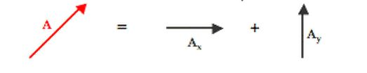
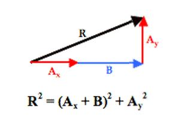
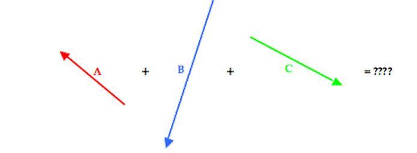

Addition of Non-Perpendicular Vectors
Now suppose that your task involves adding two non-perpendicular vectors together. We will call the vectors A and B. Vector A is a nasty angled vector that is neither horizontal nor vertical. And vector B is a nice, polite vector directed horizontally. The situation is shown below.
Of course nasty vector A has two components - Ax and Ay. These two components together are equal to vector A. That is, A = Ax + Ay.
And since this is true, it makes sense to say that A + B = Ax + Ay + B.
And so the problem of A + B has been transformed into a problem in which all vectors are at right angles to each other. Nasty has been replaced by nice and that should make any physics student happy. With all vectors being at right angles to one another, their addition leads to a resultant that is at the hypotenuse of a right triangle. The Pythagorean theorem can then be used to determine the magnitude of the resultant.
 Let’s see this technique applied in a sample problem:
Cam is on a trek. Starting from home, they make the following movements.
To determine the resultant, the three individual vectors are resolved into horizontal and vertical components. The angle information about each vector is used to form a right triangle in which the vector is the hypotenuse and the perpendicular sides are oriented along the east-west and north-south axes. This is shown in the diagram below.
Trigonometric functions - sine, cosine and tangent - are then used to determine the magnitude of the horizontal and vertical component of each vector. The work is shown and organized in the table below.
The last row of the above table represents the sum of all the East-West components and the sum of all the North-South components. The resultant consists of these two components. The resultant is determined by adding together these two the components to form a right triangle that has a hypotenuse that is equal to the resultant. This typically involves adding all the horizontal components to determine the total length of the horizontal side of the right triangle … and adding all the vertical components to determine the total length of the vertical side of the right triangle. This is done in the table above by simple adding another row to the table for the vector sum of all the components. In adding the east-west components of all the individual vectors, one must consider that an eastward component and a westward component would add together as a positive and a negative. Some students prefer to think of this as subtraction as opposed to addition. In actuality, it really is addition - the addition of vectors with opposite direction. Similarly, a northward and a southward component would also add together as a positive and a negative. Once the bottom row is accurately determined, the magnitude of the resultant can be determined using Pythagorean theorem.
R2 = (0.696 km)2 + (4.326 km)2 R2 = 0.484 km2 + 18.714 km2 R2 = 19.199 km2 R = SQRT(19.199 km2) R = ~4.38 km
The direction of the resulting displacement can be determined by constructing the final triangle from the components of the resultant. The components of the resultant are simply the sum the east-west and north-south components. Once done, SOH CAH TOA is used to determine the angle that the resultant makes with a nearby axis. The diagram is shown at the right. The angle labeled as theta (Θ) is the angle between the resultant vector and the west axis. This angle can be calculated as follows:
Tangent(Θ) = opposite/adjacent Tangent(Θ) = (4.326 km)/(0.696 km) Tangent(Θ) = 6.216 Θ = tan-1(6.216) Θ = 80.9°
This angle measure represents the angle of rotation of the vector south of due west. It would be worded as 80.9° south of west. Since west is 180° counterclockwise from east, the direction could also be expressed in the counterclockwise (CCW) from east convention as 260.9°. So the result of our analysis is that the overall displacement is 4.38 km with a direction of 260.9° (CCW).